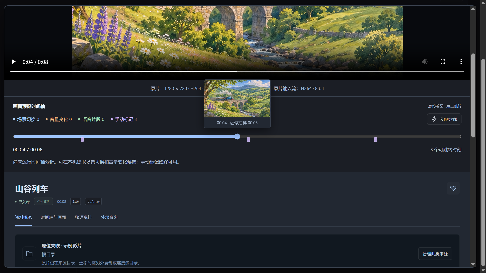
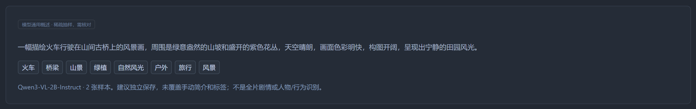

只读关联目录
用 Windows 系统窗口选择现有文件夹或外接硬盘。扫描子目录，可设置排除项，也能定期检查已关联目录中的新资料。默认只读，原片留在原位。
本地影音资料库
关联已有文件夹，扫一眼动态封面，拖时间轴找到记得的画面。也可用离线模型给视频打标签。原片留在原来的目录。
Windows x64 便携预览版 · MIT 开源
浏览与播放
开启自动预览后，已就绪的视频卡片在视野内静音播放，无需悬停。离屏暂停，播放也受浏览器和减少动态效果设置影响。
悬停或拖动时间轴看抽样帧，点一下跳到对应位置。支持手动标记，也可标出候选画面切换与音量变化。
封面和静音短片在后台准备。打开资料库体检，可按来源看进度和失败原因。

可选离线模型
安装 Qwen3-VL 2B 后，模型从抽样画面生成中文概述，并给场景和清晰可见的普通动作建议标签。可按模型标签筛选。人工标题、简介和标签独立保留。
山谷列车 · 本机分析生成的标签

可选模型权重约 1.45 GiB。18+ 视频分组由你设置。
导入、管理和迁移
用 Windows 系统窗口选择现有文件夹或外接硬盘。扫描子目录，可设置排除项，也能定期检查已关联目录中的新资料。默认只读，原片留在原位。
统一浏览手机导出视频、动画、漫剧、老片和照片。支持按标签查找、收藏和继续观看。18+ 视频可按目录或单条资料手动分组。
可扫描 MP4、MOV、MKV、AVI 等格式。查看时长、体积、分辨率和编码。能否直放取决于编码，必要时用 FFmpeg 准备兼容副本。
查看新增、缺失文件和磁盘离线状态。换盘符或挂载位置后，可核对并重新关联。支持备份片目、封面和已登记的预览。原片需另行备份。
切换精简或详细卡片，按需要使用日间与夜间主题。进入播放器后可放大画面并查看附近的抽样帧。
桌面版无需账号，基础浏览和播放可离线使用。在线演示固定使用六段合成样片。Windows 试用包自带 Python 和可离线播放的样片。
点选原图查看界面细节。
Windows x64 下载后解压，双击 Start-Trial.cmd。自己的视频需要生成预览或转换格式时，可使用已有 FFmpeg，或运行包内的 Setup-FFmpeg.cmd。macOS 提供源码启动脚本，实机验证待完成。